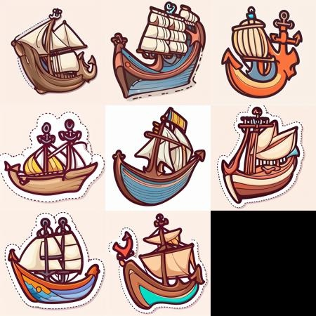
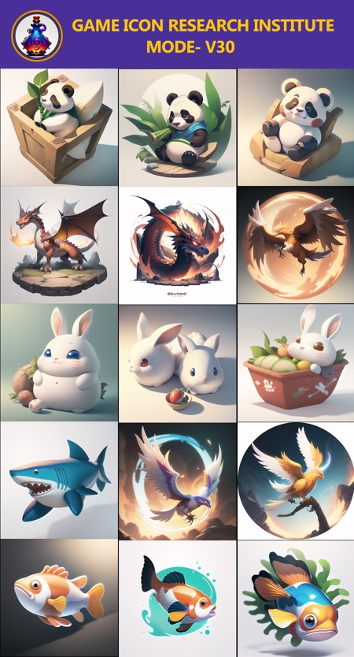

SD本地集成的LoRa模型
game icon institute_卡通场景
game icon institute_卡通场景
- 链接：https://civitai.com/models/114780
- 类型：LORA
- 描述：卡通场景
- 基础模型：Game Icon Institute_mode V3
- 推荐配置
- wight：0.4 ~ 0.8
- trigger words：game icon institute, game icon
game icon institute_卡通表情包
game icon institute_卡通表情包
- 链接：https://civitai.com/models/114761
- 类型：LORA
- 描述：卡通表情包
- 基础模型：Game Icon Institute_mode V3
- 推荐配置
- wight：0.4 ~ 0.8
- trigger words：game icon institute, game icon
Game Icon Research Institute Lora-Scene cutting
Game Icon Research Institute Lora-Scene cutting
- 链接：https://civitai.com/models/97862
- 类型：LORA
- 描述：卡通游戏场景
- 基础模型：Game Icon Institute_mode V3
- 推荐配置
- wight：0.4 ~ 0.8
- trigger words：game icon institute, game icon
GameIconResearch_animals_Lora
GameIconResearch_animals_Lora
- 链接：https://civitai.com/models/86382
- 类型：LORA
- 描述：卡通动物，圆球形
- 基础模型：Game Icon Institute_mode V3
- 推荐配置
- wight：0.4 ~ 1
- trigger words：game icon
GameIconResearch_BUTC_Lora
GameIconResearch_BUTC_Lora
- 链接：https://civitai.com/models/110153
- 类型：LORA
- 描述：游戏按钮背景
- 基础模型：Game Icon Institute_mode V3
- 推荐配置
- wight：0.4 ~ 0.8
- trigger words：game icon institute
GameIconResearch_omkt_Lora
GameIconResearch_omkt_Lora
- 链接：https://civitai.com/models/85724
- 类型：LORA
- 描述：卡通游戏风格
- 基础模型：Game Icon Institute_mode V2.2
- 推荐配置
- wight：0.4 ~ 0.7
- trigger words：game icon institute
GameIconResearch_Pixel_Lora
GameIconResearch_Pixel_Lora
- 链接：https://civitai.com/models/88900
- 类型：LORA
- 描述：像素风格
- 基础模型：Game Icon Institute_mode V3
- 推荐配置
- wight：0.4 ~ 1
- trigger words：game icon institute
GameIconResearch_xiaojingling_Lora
GameIconResearch_xiaojingling_Lora
- 链接：https://civitai.com/models/102898
- 类型：LORA
- 描述：游戏小精灵
- 基础模型：Game Icon Institute_mode V3
- 推荐配置
- wight：0.4 ~ 0.8
- trigger words：game icon institute
hanfu tang 汉服唐风
hanfuTang_v35
- 链接：https://civitai.com/models/44395
- 类型：LORA
- 描述：唐朝汉服
- 基础模型：SD 1.5
- 推荐配置
- wight：0.5 ~ 0.8
- trigger words：tang style，hanfu
- 上衫 upper shan
- 长上衫 long upper shan
- 橙/红/绿/蓝/粉/黄/白 + 上衫 orange/red/green/blue/pink/yellow/white+upper shan
- 淡蓝 light blue
- 浅绿 light green
- 浅红 light red
- 青蓝 cyan blue
- 浅紫色 light purple
- 黑蓝 black with blue
- 橙白 white with orange
- 粉黑 pink with black
- 齐胸破裙 chest po skirt
- 齐胸褶裙 chest pleated skirt
- 白/红/绿/蓝/粉/蓝/紫 + 齐胸破裙/齐胸褶裙 white/red/green/blue/pink/blue/purple + chest pleated skirt
- 彩色 multicolour
- 紫白 purple with white
- 黄白 white with yellow
- 天蓝 blue with white
- 橙白 orange with white
- 灰豆绿 green with white
- 淡黄白 light orange with white
- 粉白裙子 pink with white / white with pink
- 系带 waistband
- 绿/黄/红/粉/橙 + 系带 green/yello/red/pink/orange + waistband
- 淡蓝 light blue
- 绿白 green with white
- 黄绿 green with yellow
- 紫白 purple with white
- 红白系带 red with white waistband
- 红黑系带 red with black waistband
- 黄白系带 yellow with white waistband
- 披帛 pibo
- 白/橙/黑/粉/绿/红/紫 + 披帛 white/orange/black/pink/green/red/purple + pibo
- 浅绿披帛 light green pibo
- 黄白披帛 white with yellow pibo
Ink scenery | 水墨山水
Ink scenery
- 链接：https://civitai.com/models/78605
- 类型：LORA
- 描述：水墨画风
- 基础模型：Other
- 推荐配置
- trigger words：white background, scenery, ink, mountains, water, trees
small_scene(3D)
small_scene_V2
- 链接：https://civitai.com/models/34107
- 类型：LORA
- 描述：3D微型世界
- 基础模型：Other
- 推荐配置
- trigger words：3D_scene, small_scene
- Steps: 25+
- Sampler: Euler
- CFG scale: 9 to 12
- Weight: 0.5-0.8
Tsunade - {Naruto
TsunadeV1
- 链接：https://civitai.com/models/94793
- 类型：LORA
- 描述：火影忍者纲手
- 基础模型：SD 1.5
- 推荐配置
- trigger words：Tsunade, blonde hair, large breasts, mature female, blue pants, green coat, chest bandage
- CFG scale: 6 to 9
- Weight: 0.7 - 0.9
Vertical scene
Vertical scene
- 链接：https://civitai.com/models/89361
- 类型：LORA
- 描述：竖版2D卡通背景
- 基础模型：Other
- 推荐配置
- trigger words：vertical scene
- Weight: 0.6 - 0.7
- 基于NoveAI全量模型训练，主模型建议使用latest.ckpt
GameIconResearch_3d_Lora
GameIconResearch_3d_Lora.safetensors
- 链接：https://civitai.com/models/80550
- 类型：LORA
- 描述：3D卡通图像
- 基础模型：SD 1.5
- 推荐配置
- trigger words：icon, game icon
- Weight: 0.4 - 1
SD本地集成的CheckPoint大模型
国风3 GuoFeng3
3Guofeng3_v34.safetensors
- 链接：https://civitai.com/models/10415/3-guofeng3
- 类型：CHECKPOINT TRAINED
- 基础模型：SD 1.5
- 推荐配置
- Sampling steps:30 or 50
- Sampler:DPM++ SDE Karras
- VAE:vae-ft-mse-840000 stabilityai/sd-vae-ft-mse-original at main (huggingface.co)
- 关键词：best quality, masterpiece, highres, 1girl,china dress,Beautiful face
- 负面词：NSFW, lowres,bad anatomy,bad hands, text, error, missing fingers,extra digit, fewer digits, cropped, worstquality, low quality, normal quality,jpegartifacts,signature, watermark, username,blurry,bad feet
- 更好的负面词：(((simple background))),monochrome ,lowres, bad anatomy, bad hands, text, error, missing fingers, extra digit, fewer digits, cropped, worst quality, low quality, normal quality, jpeg artifacts, signature, watermark, username, blurry, lowres, bad anatomy, bad hands, text, error, extra digit, fewer digits, cropped, worst quality, low quality, normal quality, jpeg artifacts, signature, watermark, username, blurry, ugly,pregnant,vore,duplicate,morbid,mut ilated,tran nsexual, hermaphrodite,long neck,mutated hands,poorly drawn hands,poorly drawn face,mutation,deformed,blurry,bad anatomy,bad proportions,malformed limbs,extra limbs,cloned face,disfigured,gross proportions, (((missing arms))),(((missing legs))), (((extra arms))),(((extra legs))),pubic hair, plump,bad legs,error legs,username,blurry,bad feet
- 如果想元素更丰富，可以添加下方关键词：Beautiful face,hair ornament, solo,looking at viewer,smile,closed mouth,lips china dress,dress,hair ornament, necklace, jewelry, long hair, earrings, chinese clothes,architecture,east asian architecture,building,outdoors,rooftop,city,cityscape
cartoon scene
cartoonScene_v10.ckpt
- 链接：https://civitai.com/models/102431
- 类型：CHECKPOINT MERGE
- 描述：表现自然景观的效果较好，水、树、山都能表现的很好，建筑数量相对有限
- 基础模型：SD 1.5
anything-v5
anything-v5-PrtRE.safetensors

外挂 VAE 模型：anything-v4.0.vae.pt PS：没有可以不用！！！
CLIP 终止层数：2
正向提示词：beautiful girl Green eyes pale skin
反向提示词：Negative prompt: Negative prompt: Negative prompt: NSFW, (worst quality:2), (low quality:2), (normal quality:2), lowres, normal quality, ((monochrome)), ((grayscale)), skin spots, acnes, skin blemishes, age spot, (ugly:1.331), (duplicate:1.331), (morbid:1.21), (mutilated:1.21), (tranny:1.331), mutated hands, (poorly drawn hands:1.5), blurry, (bad anatomy:1.21), (bad proportions:1.331), extra limbs, (disfigured:1.331), (missing arms:1.331), (extra legs:1.331), (fused fingers:1.61051), (too many fingers:1.61051), (unclear eyes:1.331), lowers, bad hands, missing fingers, extra digit,bad hands, missing fingers, (((extra arms and legs)))
迭代步数 (Steps)：29
采样方法 (Sampler)：DPM++ SDE Karras
提示词引导系数 (CFG Scale)：7
随机数种子 (Seed)：1234123534（图01）、1234123535（图02）、1234123536

外挂 VAE 模型：anything-v4.0.vae.pt PS：没有可以不用！！！
CLIP 终止层数：2
正向提示词：best quality, masterpiece, seaside, nurse, cosplay
反向提示词：lowres, bad anatomy, bad hands, text, error, missing fingers, extra digit, fewer digits, cropped, worst quality, low quality, normal quality, artifacts, signature, watermark, username, blurry, missing arms, long neck, humpbacked, bad feet, nsfw, malformed limbs, Missing limbs, extra limbs, missing legs, more than 2 thighs
迭代步数 (Steps)：29
采样方法 (Sampler)：Euler a
提示词引导系数 (CFG Scale)：7
随机数种子 (Seed)：34542456412（图01）、34542456413（图02）、34542456414（图03）

外挂 VAE 模型：anything-v4.0.vae.pt PS：没有可以不用！！！
CLIP 终止层数：2
正向提示词：masterpiece, best quality, 1girl, white hair, medium hair, cat ears, closed eyes, looking at viewer, :3, cute, scarf, jacket, outdoors, streets
反向提示词：EasyNegative, (worst quality, low quality, normal quality:1.4), lowres, skin spots, acnes, skin blemishes, age spot, glans,extra fingers, fewer fingers,strange fingers,((bad hand)),Hand grip,(lean),Extra ears,(Four ears),Strange eyes,(three arms),Many hands,(Many arms),((watermarking))
迭代步数 (Steps)：20
采样方法 (Sampler)：Euler a
提示词引导系数 (CFG Scale)：7
随机数种子 (Seed)：4188565268（图01）、4188565269（图02）、4188565270（图03）
CuteYukiMix(特化可爱风格adorable style）

- 链接：https://civitai.com/models/28169
- 类型：CHECKPOINT TRAINED
- 描述：整体风格偏幼化。它可以比较轻松的画出可爱风格的人物，但并非只能画萝莉风格人物，您可以尝试各种有意思的prompt，并且它画风景(背景)效果也很好。
- 基础模型：SD 1.5
- 推荐配置
- 需要添加VAE模型，效果更好
- Steps: 20-30
- Sampler: DPM++ SDE Karras
- CFG scale: 7
- Size: 512x768
- Denoising strength: 0.6
- Clip skip: 2
- Hires upscale: 2
- Hires steps: 10-25
- Hires upscaler: R-ESRGAN 4x+ Anime6B.
- Negative prompt:NG_DeepNegative_V1_75T, EasyNegative, error, missing fingers, extra digit, fewer digits, cropped, worst quality, low quality, normal quality, jpeg artifacts, signature, watermark, username, blurry, (worst quality, low quality:1.4), (bad anatomy), (inaccurate limb:1.2), bad composition, inaccurate eyes, extra digit,fewer digits, (extra arms:1.2), (bad-artist:0.6), bad-image-v2-39000
gameIconInstitute_ico2


gameiconinstitute_v20.safetensors
- 链接：https://civitai.com/models/92400
- 类型：CHECKPOINT TRAINED
- 描述：游戏Icon风格,是《游戏图标研究所》的基础大模型，更适合创建2D样式图标
- 基础模型：SD 1.5
- 推荐配置
- trigger words: game icon institute,game icon
Game Icon Institute_mode


gameiconinstitute_v30.safetensors
- 链接：https://civitai.com/models/47800
- 类型：CHECKPOINT TRAINED
- 描述：游戏Icon风格，是《游戏图标研究所》的基础大模型，更适合创建3D样式图标
- 基础模型：SD 1.5
- 推荐配置
- trigger words: game icon
hello25DVintageAnime


hello25Dvintageanime_V20.safetensors
- 链接：https://civitai.com/models/98018
- 类型：CHECKPOINT TRAINED
- 描述：复古风格2.5D卡通
- 基础模型：SD 1.5
- 推荐配置
- Image Size: 512x512 / 512x768
- Sampling method: Euler a, DPM++ 2M Karras, DPM++ 2M alt Karras
- Clip skip: 2
- Sampling steps: 28
- Hires.fix upscaler: R-ESRGAN 4x+/R-ESRGAN 4x+ Anime6B
- Denoising strengh: 0.5
- CFG Scale: 7
- VAE : Counterfeit-V2.5.vae.pt（Color retro） or clearvae_main.safetensors（colorful）
helloCartoonFilm

hellocartoonfilm_V13.safetensors
- 链接：https://civitai.com/models/93812
- 类型：CHECKPOINT MERGE
- 描述：电影级别的3d卡通角色
- 基础模型：SD 1.5
- 推荐配置
- Sampling method: Euler a, DPM++ 2M Karras, DPM++ 2M alt Karras
- Clip skip: 2
- Hires.fix upscaler: 4x-UltraSharp/4x-UltraMix
- CFG Scale: 7
- VAE : kl-f8-anime2.ckpt or vae-ft-mse-840000-ema-pruned.safetensors
LEOSAM's MoonFilm

leosamsMoonfilm_filmGrain20.safetensors
- 链接：https://civitai.com/models/43977
- 类型：CHECKPOINT MERGE
- 描述：真实系人物、风景图片
- 基础模型：SD 1.5
Manmaru mix


manmaruMix_v20.safetensors
- 链接：https://civitai.com/models/86277
- 类型：CHECKPOINT MERGE
- 描述：可爱动画风格模型，能描绘丰富的场景和人物
- 基础模型：SD 1.5
MeinaPastel


meinapastel_v6Pastel.safetensors
- 链接：https://civitai.com/models/11866
- 类型：CHECKPOINT MERGE
- 描述：用良好的光，影和细节制作具有2d感觉的插图，制作柔和或丰富多彩的图像
- 基础模型：SD 1.5
- 推荐配置
- Sampler: DPM++ 2M Karras/SDE Karras/euler a: 20 to 40 steps.
- Resolutions: 512x768, 512x1024 for Portrait!
- Resolutions: 768x512, 1024x512, 1536x512 for Landscape!
- CFG Scale: 4 to 11.
- Hires.fix: R-ESRGAN 4x+Anime6b, with 15 steps at 0.4 denoising.
- V6(Pastel) Hires.fix: Latent (Nearest-exact) with 10 to 15 steps at 0.55 denoising.
- Clip Skip: 2.
- Negatives: '(worst quality, low quality:1.4), monochrome, zombie, (interlocked fingers)'
MsceneMix 卡通景景大模型


mscenemix_v11.safetensors
- 链接：https://civitai.com/models/75879
- 类型：CHECKPOINT MERGE
- 描述：擅长卡通场景, 角色方面3D略微偏二次元
- 基础模型：SD 1.5
- 推荐配置
- 关键词：mini landscape，indoor, toon，pixar， scene，building，vehicle，masterpiece，best quality
- 没有加VAE，不挂VAE会发灰，好处是可以灵活使用不同的VAE来调整配色
- 出场景建筑的时候不用加负面关键词，有角色的话可以加
XXMix_9realistic

xxmix9realistic_v40.safetensors
- 链接：https://civitai.com/models/47274
- 类型：CHECKPOINT MERGE
- 描述：真实人像
- 基础模型：SD 1.5
- 推荐配置
- Sampler: DPM++ 2M Karras alt Karras or DPM++ SDE Karras
- Steps: 20~40
- Hires upscaler:4x-UltraSharp
- Hires upscale: 2
- Hires steps: 15
- Denoising strength: 0.2~0.5
- CFG scale: 6-8
- clip skip 2
Copyright © 2015 Powered by MWeb, Theme used GitHub CSS.